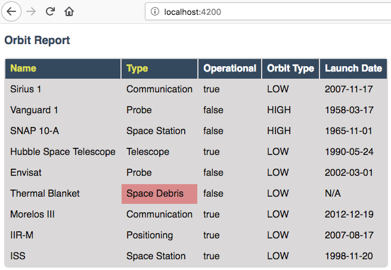

Assignment #6: Orbit Report¶
Sections:¶
Introduction and Background¶
There are thousands of satellites orbiting the earth. You are tasked with updating a searchable, sortable table of satellites. For the purposes of this assignment, a satellite will be defined as any object purposefully placed into orbit.
Your table will have the following features:
Satellites: Each row in the table contains data on one satellite.
Search form: Filters search results based on matches to the entered text. Pressing enter or clicking the button triggers the search.
Sortable columns:
NameandTypecolumn headers can be clicked, which will sort the table using that property.Counts: Displays the total number of satellites in the table.
Your completed assignment should look something like this demo app.
Warning
Please do not attempt this assignment until after your first lesson on Angular. It can be tempting to dive right in, but Angular is a broad topic, and you want to wait to have a solid understanding of the framework before you get started.
Setup and Starter Code¶
In Canvas, Graded Assignment #6: Orbit Report contains a GitHub Classroom assignment invitation link. Refer back to the GitHub Classroom instructions from Graded Assignment #0: Hello World for submission instructions.
Note
Don't forget to run npm install before trying to run the starter code.
When you first pull down the starter code, your running application will look something like this:
{kind=link}
Requirements¶
As you accomplish each task, commit and push your changes before moving on to the next item.
1) Display Orbit List Component¶
The main portion of the orbit report is a table of satellite data. When you first pull down and serve this angular project, you'll notice there is no such table on the page. That's because the angular component responsible for this table hasn't been added to the app's HTML.
To have the satellite table displayed, add the orbit-list component tag to the app
HTML.
{kind=link}
2) Display Live Satellite Data¶
Now that you have the orbit-list component being rendered on the page,
you can have the table change the number of rows displayed depending on the fetched Satellite data.
This is a flexible web app!
There is an array of
Satelliteobjects inapp.component.tsnameddisplayList. In order to pass that array into theorbit-list, you need to learn a new Angular feature named input properties. Here, the term "input" refers to data being sent into the component.Note
Angular input properties are not related to HTML input elements.
To pass the
displayListarray into theorbit-listcomponent, you need to learn new syntax.Modify the tag you added in the step above as follows:
<app-orbit-list [satellites]="displayList"></app-orbit-list>
[satellites]declares a newsatellitesproperty on theorbit-listcomponent.="displayList"sets the value of thesatellitesproperty to be thedisplayListarray.
Now, the
orbit-listcomponent has access to the fetched satellite data. To confirm this, change theorbit-listcomponent html to use it's satellites property.When you can confirm that
orbit-listhas access to the satellite data, remove the single hard-coded satellite table row and replace it with code using an*ngFordirective to loop over all of the fetched satellite objects and display their information. In the new report table, each row represents a different satellite.The HTML table you build should look like the following.
View the app in your browser. Your table should look something like:
Example of satellite table.¶
3) Highlight Space Debris¶
You need to make it easier to spot dangerous space debris in the satellite data.
Inside of the Satellite class, there is a broken method called isSpaceDebris.
This is meant to return true only when a Satellite object has this type.
To highlight space debris, you first need to fix this method. Next,
use the method to add a warning class onto the table cell. There's already a
css style rule to make any element marked with the warning class appear red.
Repair the
isSpaceDebrismethod in theSatelliteclass.isSpaceDebrisreturnstrueif the satellitetypeis'Space Debris', and it returnsfalseotherwise.Use
isSpaceDebristo add thewarningCSS class to the<td>containing the satellite's type. Use an Angular attribute directive to accomplish this.Tip
Refer to the section on changing styles with attribute directives.
Example of warning style adding a red background to Space Debris type.¶
4) Counting Satellites¶
orbit-counts is a component that shows the total number of satellites currently
displayed in the table. Or at least, that's what it should do.
Right now, it's just displaying NaN.
To fix this, you'll need to replace the NaN string with a structural directive to indicate
how many satellites are on display in the table. Like orbit-list, the orbit-counts component
has access to the array of fetched satellites using an input property called satellites.
The desired functionality is that the number displayed with change with the number of satellites displayed. Checkout this gif for reference. Note, you do not need to display the counts for each satellite type to pass the autograder, just use the satellite property to show the total number of satellites displayed.
Bonus Missions¶
1) Zebra Stripes¶
Alternate the color for every other row in the table. Choose whichever pair of colors you prefer, but the highlighting for space debris should still be distinct.
2) Update the Search Feature¶
Modify the search feature to find matches using the orbitType and type
properties.
If you completed the counting satellites bonus, use an *ngFor to loop over
an array of the different types, instead of explicitly writing a <tr> for
each satellite type.
Note
You may have already completed this mission, depending on how you accomplished counting the satellites.
Submitting Your Work¶
In Canvas, open the Orbit Report assignment and click the "Submit" button. An input box will appear.
Copy the URL for your Github repository and paste it into the box, then click "Submit" again.